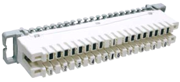

telephone patch panel
- 19" panel 50 x RJ45 is designed for termination of vertical cabling and accepts multi-pair unshielded telecom cables or 4 pairs twisted cable.
- Made on the basis of 10 ports unshielded boards and two pairs cat. 3 connectors for telephone applications.
- Ensures transmission parameters required for telephone applications, easy and convenient mounting, high durability of wires and easy cross connections.
- High density of cross connections (double pair modular RJ45 sockets).
- The WNK-807-155 panel set includes assembly caps, cable ties and duct markings.
- In the back panel these is a shelf to provide easy cable management.
Mount frame for telephone modules
- Produced of stainless steel.
- Equipped with sockets for telephone modules.
- Available in two sizes:
- 19" x 1 U - 6 modules
- 19" x 3 U - 15 modules
Telephone connectors
Disconnecting moduleDisconnecting module is basis of telephone system. Module is placed on mount frame. Equipped with IDC contacts for termination of wires. There is also possibility of placing on them a set of magazine of gas surge arrestors. The module possesses shorted contacts. Application of insulation plug allows to disconnect any line. 